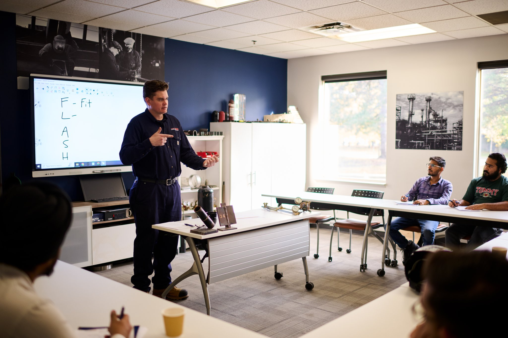
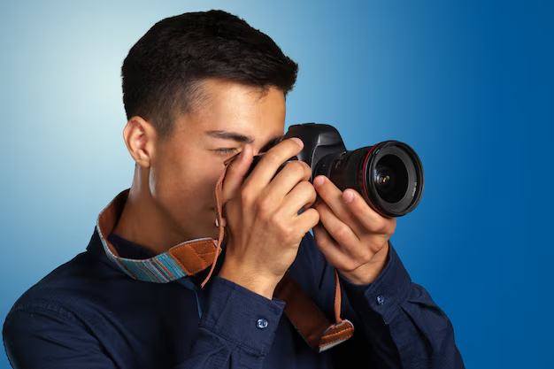

Ние създаваме пространството, където хората се учат да виждат този свят чрез обектив
Фотографията не е просто натискане на бутон. Тя е начин да забележиш неща, които повечето хора подминават. Например светлина върху сграда в края на деня, отражение в локва след дъжд или изражение на човек в точния момент.
Фотографски клуб „Фокус“ е място за хора, които искат да се научат да виждат тези моменти и да ги превръщат в снимки. Клубът събира ученици и любители на фотографията, които искат да развиват уменията си, да експериментират и да споделят идеи.
Тук няма значение дали снимате с професионален фотоапарат или с телефон. По-важно е желанието да се учите и да търсите интересни кадри. В клуба ще имате възможност да участвате във фотопрогулки, практически упражнения, анализ на снимки и различни творчески задачи.

